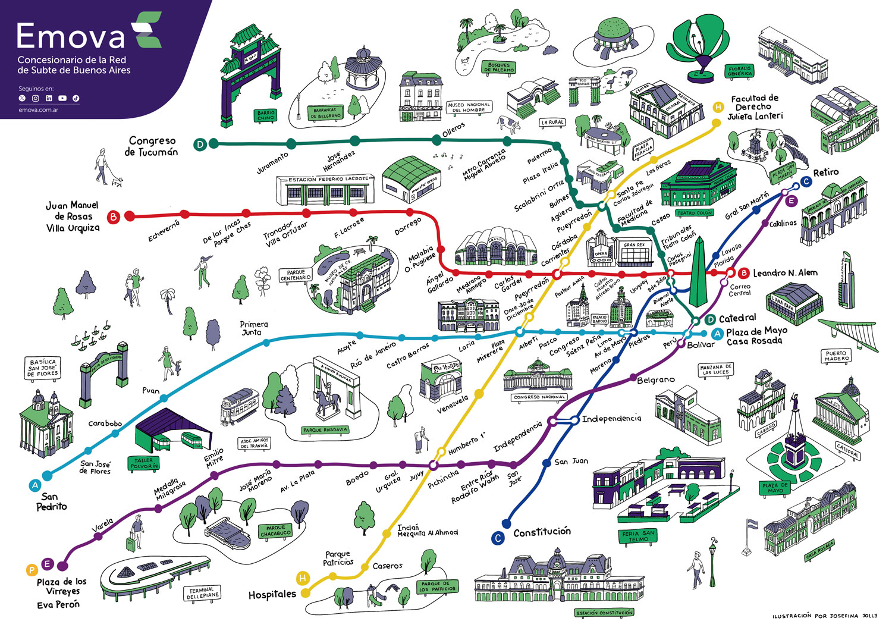

Sobre la Linea
La Línea C del Subte de Buenos Aires es una de las rutas más importantes de la red porque funciona como conexión entre las estaciones terminales de los ferrocarriles más utilizados de la ciudad.
Une la estación Constitución (donde combina con el Ferrocarril Roca) con la estación Retiro (donde combina con los Ferrocarriles Mitre, San Martín y Belgrano Norte), facilitando el traslado de miles de pasajeros que ingresan a la ciudad cada día.
Mapa de la linea

Estaciones
La Línea C tiene la particularidad de combinar con todas las demás líneas del subte, por eso es considerada la "línea de las combinaciones":
- Constitución: Cabecera sur, combina con el Ferrocarril Roca. Es una de las estaciones de mayor flujo de pasajeros de toda la red.
- Independencia: Permite combinar con la Línea E hacia el sudeste de la ciudad.
- Moreno: Estación ubicada cerca del barrio de Monserrat.
- Avenida de Mayo: Combina con la Línea A, una de las más antiguas del mundo.
- Diagonal Norte: Combina con la Línea B y se encuentra en pleno microcentro porteño.
- Lavalle: Combina con la Línea D, en el corazón del centro comercial.
- General San Martín: Cercana a Plaza San Martín y a importantes edificios del centro.
- Retiro: Cabecera norte. Combina con los ferrocarriles Mitre, San Martín y Belgrano Norte, y con la terminal de ómnibus de larga distancia.
Horarios
Lunes a viernes 05:30hs hasta las 23:00hs
Sábados 06:00hs hasta las 23:30hs
Domingos y feriados 08:00hs hasta las 22:30hs
Curiosidades sobre la Linea C
La Línea C tiene una historia rica y varios datos llamativos que la hacen única dentro del Subte de Buenos Aires:
- Fue inaugurada el 9 de noviembre de 1934, convirtiéndose en la tercera línea de la red y en la primera línea con trazado transversal de Latinoamérica.
- Es conocida como "la línea de los españoles" porque fue construida por la Compañía Hispano Argentina de Obras Públicas y Finanzas (CHADOPyF), de capitales españoles.
- Es una de las líneas más cortas del subte: tiene 9 estaciones y aproximadamente 4,4 kilómetros de extensión.
- Es la única línea de la red que no sufrió ninguna ampliación desde su inauguración: mantiene el mismo trazado desde 1936.
- Es la única línea que conecta las dos principales terminales ferroviarias de la ciudad: Constitución (Ferrocarril Roca) y Retiro (Ferrocarriles Mitre, San Martín y Belgrano Norte).
- Funciona como distribuidor de pasajeros hacia las demás líneas del sistema, lo que la convierte en la "línea de las combinaciones": conecta con las líneas A, B, D, E y H.
- Fue la primera línea del subte en adoptar el muralismo. Sus estaciones conservan 12 murales de azulejos titulados "Paisajes de España", elaborados por la fábrica argentina Cattáneo y Cía. según bocetos de artistas como Antonio Ortiz Echagüe, Alejandro Sirio y Léonie Matthis.
- Las estaciones Independencia y Moreno se destacan por sus diseños con escritura cúfica decorada con polvo de oro, evocando la tradición hispano-árabe andaluza.
- Se identifica con el color azul.
- Transporta aproximadamente 200.000 pasajeros por día hábil.
- El acto de inauguración del primer tramo (Constitución – Diagonal Norte) fue encabezado por el entonces presidente de la Nación, General Agustín P. Justo.
Estado de Accesibilidad - Línea C
La accesibilidad en la Línea C es parcial. Algunas estaciones cuentan con ascensores para personas con movilidad reducida, mientras que otras todavía no fueron adaptadas.
Actualmente, las estaciones que cuentan con ascensores para acceso desde la superficie al andén son:
- Retiro
- General San Martín
- Diagonal Norte
- Avenida de Mayo
- Constitución
Las siguientes estaciones NO cuentan con ascensores que garanticen el acceso autónomo desde la vía pública:
- Lavalle
- Moreno
- Independencia
Combinaciones con otras lineas
Conocé las páginas de las otras líneas desarrolladas por el grupo: